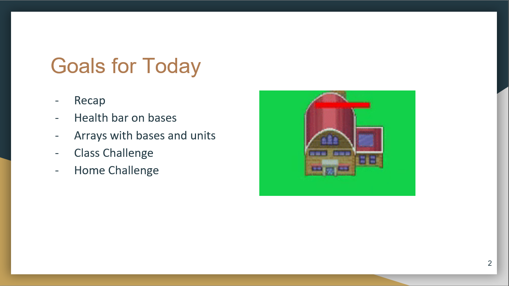
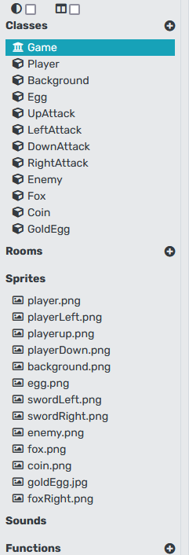
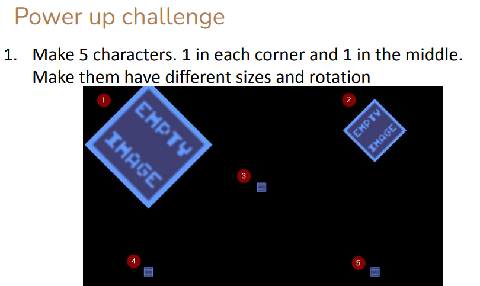
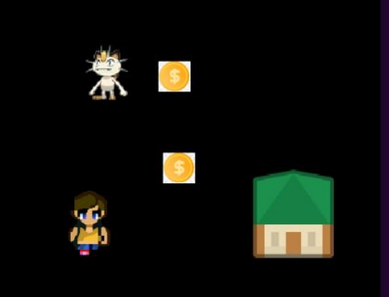
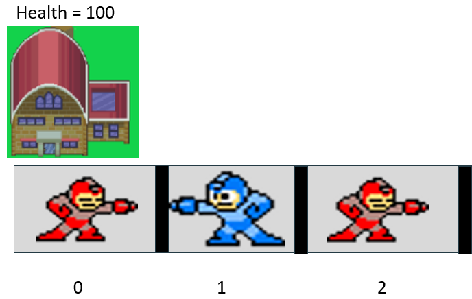
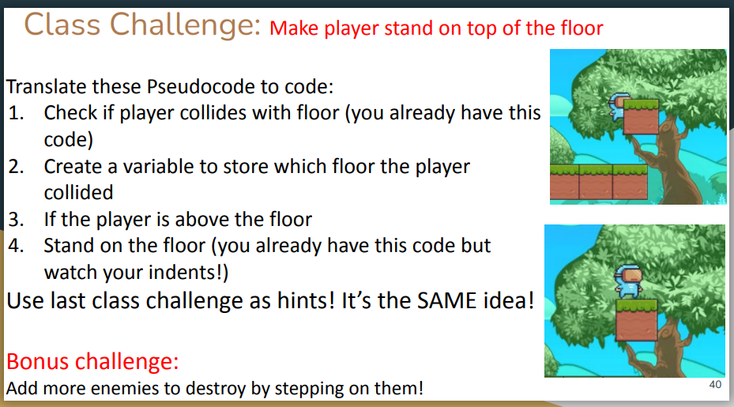

PixelPadPixelpad is a game engine for the browser. Developers get to use Python to program their applicationsBrowserPythonPixelPad, PiskelSep 2019-Jun 2021Teaching PixelPad courses to high school students. This teaches students Python. PY102, PY201, PY202, PY302 Prepare materials to teach each week on the weekends.Before a semester starts, I would have at least 5 weeks of materials prepped ahead of time. I would read through all the course materials. I would have done the lesson myself first before teaching them to the students. Each lesson, I would have goals for the day, class challenge and a summary of wheat we learned

Most students in pixelpad are elementary students. Therefore, it is most of their first time coding or using a computer. Things like creating classes, variables and finding sprites to use may be a lesson in itself.

For first time programmers, I would get them to practice creating an object and get them to place the objects in different locations on the screen. This allowed them to practice variables, coordinates and getting used to the PixelPad interface without worrying about attaching sprites or functionalities

Students' favorite part is finding sprites, because they get to add a "costume" for their characters. I would show them to find images online or they can draw their own images from piskel - a free sprite editor site. Getting sprites itself can be a lesson. This is due to the student not yet famliar with how to save and import an image. I would patiently show them how this step works

Of all the lessons to teach, the hardest part may have been arrays. Up to this point, students have been duplicating code if they needed to create multiple objects. In order for them to understand arrays, I would do an example as well as show an image representation of an array. In the example below, I was showing them how their home base has health reduced by looping through an array of enemies and teammates

The elementary students were born in the technology. Therefore, when they have a laptop in front of them, their first reaction is to go to their favorite website to play their games. My job was to make the lesson fun and have challenges that they can enjoy. The goals must be clear and concise. THe challenges must not be too long where they would give up. I would include bonus challenges in case some students finish fast.

The last day of classes is the best, because the parents get to come in and see their final product. Seeing the students showing off and being proud of their work is so satisfying for instructors like me.